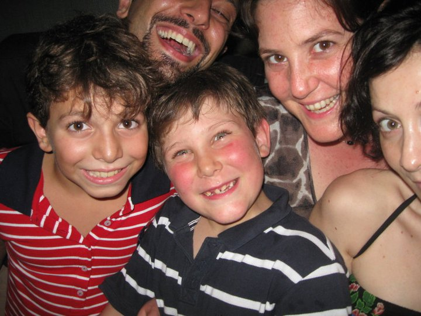
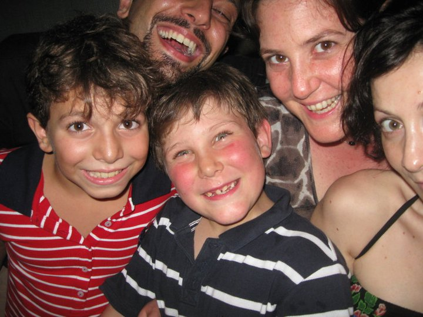

About This Work
Algorithmic Portraits investigates the intersection of traditional portraiture and contemporary machine learning. The series uses neural networks trained on classical portrait paintings to generate new works that blend historical techniques with digital processes.
Each portrait begins with contemporary photographic subjects but is processed through algorithms that have learned from masters like Rembrandt, Velázquez, and Vermeer. The resulting images question authorship, artistic tradition, and the role of technology in creative expression.
The work explores whether machines can understand and replicate the emotional depth and technical mastery found in traditional portraiture, or if they create something entirely new.